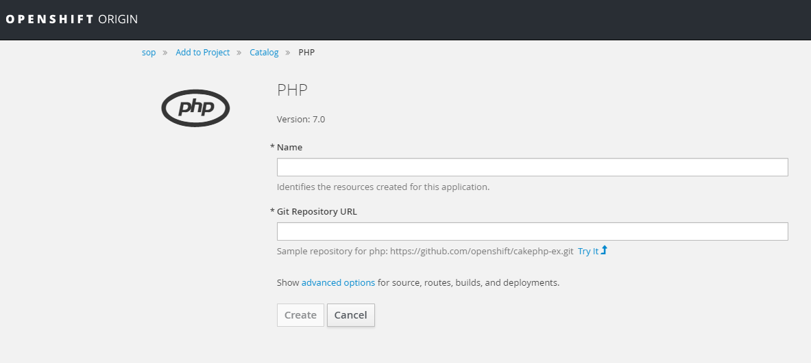
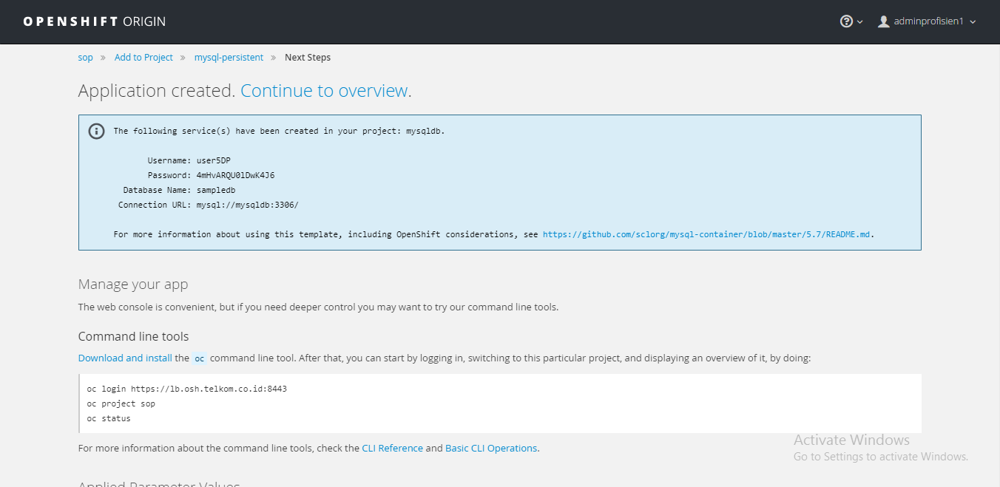

Create New Project Using Web Console
1. Open OpenShift Web Console
2. Click New Project
3. Fill the form

Create New Project Using Command Line Interface
1. Execute new-project command oc new-project [PROJECT_NAME]
$ oc new-project project0002
Now using project "project0002" on server "https://lb.osh.telkom.co.id:8443".
You can add applications to this project with the 'new-app' command. For example, try:
oc new-app centos/ruby-22-centos7~https://github.com/openshift/ruby-ex.git
to build a new example application in Ruby.
Create New Application From Catalog
1. Create New Application click Add to Project
2. Choose Application from the Catalog (tab Browse Catalog).

3. Fill the required form then click Create

Create New Application From Docker Image
1. Prepare the application from DockerHub Repositories
2. Create New Application (Add to Project > Deploy Image)

3. Specify the Image Name from chosen application from DockerHub Repositories

4. Fill the required form then click Create.
Create New Database
This section using MySQL database
1. Create New Application click Add to Project
2. Choose MySQL Persistent from the Catalog

3. Fill the required form. Set unique Database Service Name do distinguish applications inside project. Leave MySQL Connection Username, MySQL Connection Password and MySQL root user Password empty to auto generate the values. Click Create

4. Save the generated Username, Password, Database Name and Connection URL.

Create New Application With Private Git Repository
This guide shows how to create new application which source in Git private repository.
1. Setting Source Secrets
2. Add Public Key in Git Repository
to show how to add public key in GitLab see Add Public Key in GitLab Repository
3. Create New Application click Add to Project
4. Choose Application from the Catalog (tab Browse Catalog).
5. Fill the required form
-
Specify the application name
example: php-1 -
Fill
Git Repository URLwith the Git private project using SSH URLexample: git@10.60.160.38:andre/phpinfo.git -
Click
advanced options - Select
Source Secretwith source secret created in Step 1 - Click
Createbutton